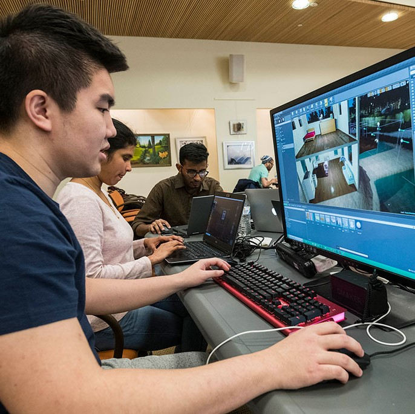

Infinite Name, One Careers!
Civil Engineering |
| Civil engineering is a professional engineering discipline that deals with the design, construction, and maintenance of the physical and naturally built environment, including public works such as roads, bridges, canals, dams, airports, sewage systems, pipelines, structural components of buildings, and railways.Read More |
Responsibilities |
Benifits of Civil |
Computer Engineering |
| Computer engineering (CoE or CpE) is a branch of electrical engineering and computer science that integrates several fields of computer science and electronic engineering required to develop computer hardware and software.[1] Computer engineers not only require training in electronic engineering, software design, and hardware-software integration, but also in software engineering.Read More |
|  |
Responsibilities |
Benifits of Computer |
Mechanical Engineering |
| Mechanical engineering is the study of physical machines that may involve force and movement. It is an engineering branch that combines engineering physics and mathematics principles with materials science, to design, analyze, manufacture, and maintain mechanical systems.[1] It is one of the oldest and broadest of the engineering branches.Read More |
Responsibilities |
Benifits of Mechanical |